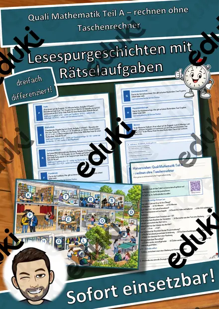
Quali Mathematik Teil A – rechnen ohne Taschenrechner – Lesespurgeschichte mit Prüfungsaufgaben (Klasse 9)
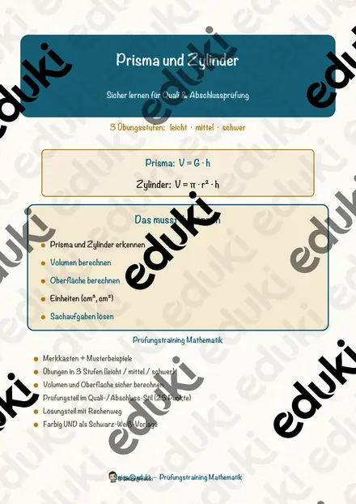
Prisma und Zylinder – Prüfungstraining Mathematik (Klasse 9)
Quadratische Funktionen – Prüfungstraining Mathematik (Klasse 9)
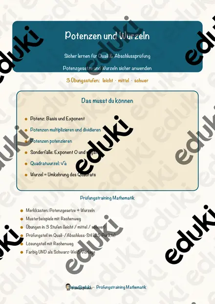
Potenzen und Wurzeln – Prüfungstraining Mathematik (Klasse 9)
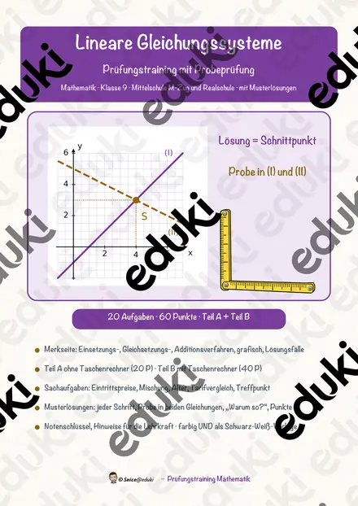
Lineare Gleichungssysteme – Prüfungstraining Mathematik (Klasse 9)
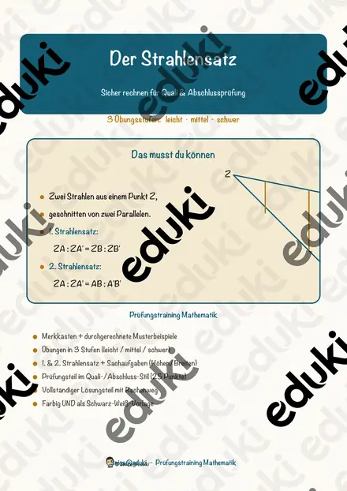
Der Strahlensatz – Prüfungstraining Mathematik (Klasse 9)
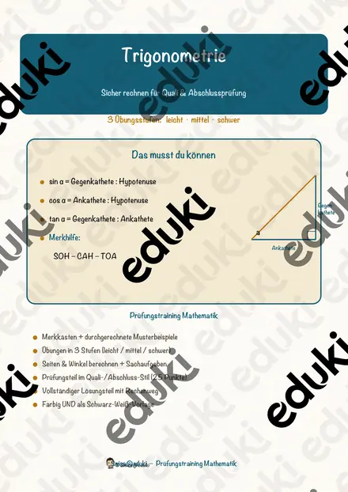
Trigonometrie – Prüfungstraining Mathematik (Klasse 9)
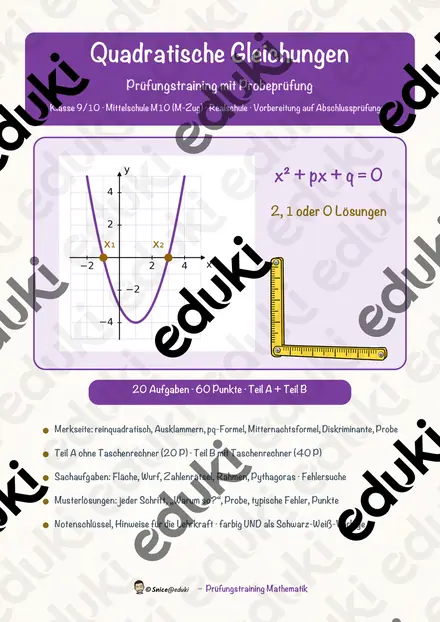
Quadratische Gleichungen – Prüfungstraining Mathematik (Klasse 9)
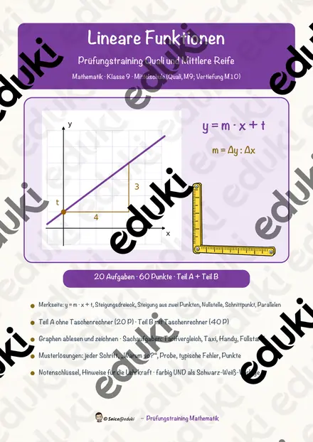
Lineare Funktionen – Prüfungstraining Mathematik (Klasse 9)
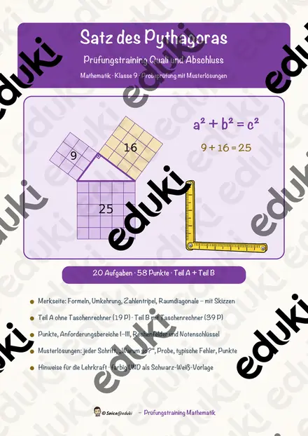
Satz des Pythagoras – Prüfungstraining Mathematik (Klasse 9)
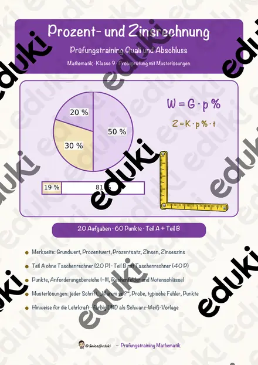
Prozent- und Zinsrechnung – Prüfungstraining Mathematik (Klasse 9)
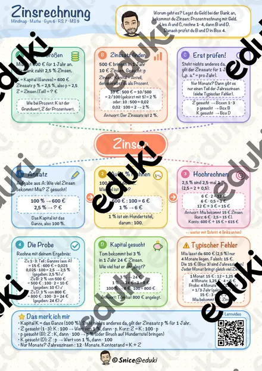
Zinsrechnung Mindmap + 4 Arbeitsblätter mit Lösungen + Lernvideo (QR) – Zinsen, Zinssatz, Kapital & Monatszinsen

Materialpaket Geometrische Körper - Steckbriefe mit Formeln - Körper Mathe Geometrie

Geometrische Körper - Steckbrief Prisma - Mathe - Geometrie - Differenziert

Geometrische Körper - Steckbrief Kegel - Mathe - Geometrie - Differenziert

Geometrische Körper - Steckbrief Pyramide - Mathe - Geometrie - Differenziert
Keine Materialien gefunden – versuch einen anderen Suchbegriff oder Filter.